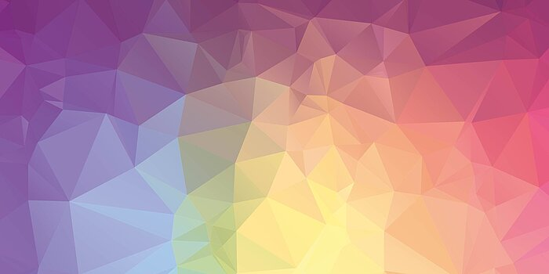

Kleurmodellen
Wat is dit?

Kleuren worden ook gecodeerd in een computer.
Achter lenzen waar je foto's mee maakt zit een beeldsensor(CDD).
De sensoren zetten bij een foto invallend licht om naar een elektrisch signaal.
Een foto bestaat uit pixels.
Om invallend licht op de sensor digitaal te kunnen opslaan in pixels,
Wordt er gebruik gemaakt van kleurmodellen
2 belangrijkste kleurmodellen:
- RGB-model (digitaal weergeven)
- CMY-model (afdrukken)
RGB-model
Wat is dit?
Het RGB-model wordt gebruikt om kleuren weer te geven op je beeldscherm.
RGB staat voor: red, green, blue.
Stel je voor: je maakt een foto van een beeldscherm, dan wordt het een beetje wazig.
Zoem je verder in dan zie je heel veel puntjes, dit zijn pixels.
Als je nog verder kon inzoemen zie je rode, groene en blauwe lampjes.
Elke pixel is 3 lampjes, deze kan je fel en zacht laten branden.
Door hiermee te spelen kunnen er verschillende kleuren worden laten zien.
Hoe werkt dit?

Stel je hebt oranje verf nodig, maar je hebt die niet, dan kan je rood met geel mengen.
Kleurmodellen gebruiken ook dit mixen van kleuren.
De kleuren die die onstaan bij het mengen bij het RGB-model, zijn anders dan bij verf.
Het is gebasseerd op een zwarte achtergrond, daardoor ontstaan er andere kleuren.
Als je kleuren toevoegt ontstaan er nieuwe kleuren, gebruik je alle kleuren wordt het wit.
Geel = rood 100% + groen 100% + blauw 0%.
Computer werkt niet met procenten,
daarom wordt de hoeveelheid RGB weergegeven met een decimaal getal van 0 tot 255.
Geel = (255, 255, 0).
De computer zet dit om naar binair en stuurt het beeldscherm aan.
CMY-model
Wat is dit?
Je gebruikt het CMY-model om kleuren af te drukken.
CMY staat voor: cyan, magentha, yellow.
Bij een RGB-model worden er kleuren toegevoegd aan een zwart beeldscherm.
Papier in de printer is wit, dat houdt in dat een RGB-model daar niet op gaat werken.
Je kan met het CMY-model geen zwart afdrukken, want dan moet je alle kleuren gebruiken en wordt het heel nat.
Om toch zwart af te drukken wordt het aan het RGB-model toegevoegd.
Dat maakt het CMYK-model, k voor Kay of blacK.
Pixel en resolutie
Het woord pixel is een mix van het woord: pictue en element.
Een pixel wordt gebruikt om invallend licht digitaal op te slaan.
Als er een foto gemaakt wordt dan zorgen lenzen en sensoren ervoor dat er een elektrisch signaal naar de pixels wordt gestuurd.
Achter de lenzen zitten beeldsensoren die het elektrische signaal versturen, deze sensoren wordt CCD genoemd.
Hoe meer pixels, hoe scherper het beeld.
Het aantal pixels heeft ook invloed op de resolutie.
De resolutie is het aantal pixels op een bepaalde plek, hoe meer pixels hoe hoger de resolutie.